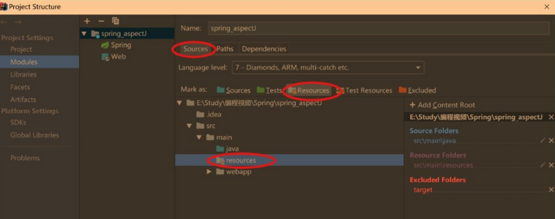

Shiro–学习笔记(包含Shiro视频)
Lesson1 Shiro概述
NO1.1 Shiro简介
Shiro是一个安全框架，也就是最基本功能是登录校验的一个框架。
- Shiro：
- 介绍：Apache Shiro是一个强大且易用的Java安全框架，具有验证、授权、加密、会话管理、与Web集成、缓存等功能。目前，使用Apache Shiro的人越来越多，因为它相当简单，对比Spring Security，可能没有Spring Security做的功能强大，但是在实际工作时可能并不需要那么复杂的东西，所以使用小而简单的 Shiro 就足够了。对于它俩到底哪个好，这个不必纠结，能更简单的解决项目问题就好了。
- 优点：
- 易于理解的Java Security API；
- 简单的身份认证(登录)，支持多种数据源(LDAP，JDBC，Kerberos，ActiveDirectory 等)；
- 对角色的简单的签权(访问控制)，支持细粒度的签权；
- 支持一级缓存，以提升应用程序的性能；
- 内置的基于POJO企业会话管理，适用于Web以及非Web的环境；
- 异构客户端会话访问；
- 非常简单的加密API；
- 不跟任何的框架或者容器捆绑，可以独立运行；
- Shiro框架中的关键对象：
Subject：主体(也就是当前登录的用户)。访问系统的用户，主体可以是用户、程序等，进行认证的都称为主体；Principal：身份信息(也就是username)。是主体进行身份认证的标识，标识必须具有唯一性。如，用户名、手机号、邮箱地址等，一个主体可以有多个身份，但是必须有一个主身份(Primary Principal)；Credential：凭证信息(也就是password)。即只有主体自己知道的安全信息，如，密码、证书；
- 基本功能：
Authentication：身份认证或登录。验证用户是不是拥有相应的身份；Authorization：授权。即权限验证，验证某个已认证的用户是否拥有某个权限，即判断用户是否能执行某个操作；Session Manager：会话管理。即用户登录后就是一次会话，在没有退出之前，它的所有信息都会在会话中；该功能下还包括：Cryptography(加密)：加密。保护数据的安全性，如，密码加密存储到数据库，而不是明文存储；Web Support(Web支持)：Web支持。可以非常容易的集成到Web环境；Caching(缓存)：缓存。如，用户登录后，其用户信息、拥有的角色/权限不必每次去查，这样可以提高效率；Concurrency(并发验证)：Shiro支持多线程应用的并发验证。即如在一个线程中开启另一个线程，能把权限自动传播过去；Testing(测试)：提供测试支持；Remeber Me(记住我)：记住我，这个是非常常见的功能，即一次登录后，下次再来的话不用登录了；Run As：允许一个用户假装为另一个用户(如果他们允许)的身份进行访问。
Shiro入门案例；
首先使用IDEA创建MAVEN项目后，在pom.xml文件中添加Shiro的依赖；
<!--Shiro安全框架使用的依赖--> <dependency> <groupId>org.apache.shiro</groupId> <artifactId>shiro-core</artifactId> <version>1.2.4</version> </dependency>在resources文件夹下创建shiro.ini配置文件；如果没有resources文件夹，就直接在main文件夹下创建一个Directory，然后在项目配置里(File菜单下Project Structure选项)，选择Modules，点击Sources，选择main文件夹下的resources文件夹，然后点击Mark as Resources 即可；

ini配置；
[main]：提供了对securityManager及其依赖的配置；securityManager=org.apache.shiro.mgt.DafaultSecurityManager securityManager.realms=$jdbcRealm[users]：提供了对用户/密码及其角色的配置，例如，用户名=密码，角色1，角色2；[roles]：提供了角色及权限之间关系的配置，例如，角色=权限1，权限2；[urls]：用于web，提供对web的url拦截的相关配置，url=拦截器[参数]；#anon是指匿名，即匿名，也就是没登录也可以访问首页 /index.html=anon #authc是指登录以后才可以访问admin路由下的资源，且角色必须是admin，权限必须是permission1 /admin/=authc,roles[admin],perms["permission1"]
编写测试类；
package cn.dengyanfei; import org.apache.shiro.SecurityUtils; import org.apache.shiro.authc.UsernamePasswordToken; import org.apache.shiro.config.IniSecurityManagerFactory; import org.apache.shiro.mgt.SecurityManager; import org.apache.shiro.subject.Subject; import org.apache.shiro.util.Factory; public class App { public static void main( String[] args ) { //1.读取配置文件，初始化工厂对象(能够获得SecurityManager的工厂) Factory<SecurityManager> factory = new IniSecurityManagerFactory("classpath:shiro.ini"); //2.获取SecurityManeger对象 SecurityManager serurityManager = factory.getInstance(); //3.将SecurityManager绑定到工具类SecurityUtils上 SecurityUtils.setSecurityManager(serurityManager); //4.通过SecurityUtils获取当前登陆的用户 Subject subject = SecurityUtils.getSubject(); //5.创建Token令牌，即通俗的讲就是传入用户名和密码，而Token用于用户进行登录验证 UsernamePasswordToken token = new UsernamePasswordToken("admin","456"); //6.传入Token令牌，用户进行登录验证 try { subject.login(token); //输出 System.out.println("登录成功啦！！"); }catch (Exception e){ e.printStackTrace(); //输出 System.out.println("登录失败了！！"); } //7.退出 subject.logout(); } }
Lesson2 Shiro基础
NO2.1 Realm
Realm是Shiro比较重要的对象。
Realm：
定义：即域，Shiro从Realm中获取安全数据(如用户、角色、权限)，就是说SecurityManager要验证用户身份，那么它需要从Realm中获取相应的用户进行比较以确定用户身份是否合法；也需要从Realm得到用户相应的角色/权限验证用户是否能进行操作；
种类：
IniRealm：Shiro默认使用自带的IniRealm，IniRealm从ini配置文件中读取用户的信息，而大部分情况下需要从系统的数据库中读取用户信息，所以需要自定义Realm；JDBCRealm：即使用JDBC进行操作数据库，但是这要求数据库中创建的用户表名称必须为users，且表中字段名也必须为username和password。使用JDBC连接数据库有两种数据源选择：C3P0数据源：导入相应的C3P0依赖，然后在Shiro配置文件中，必须使用如下的配置：[main] #使用JDBCRealm jdbcRealm=org.apache.shiro.realm.jdbc.JdbcRealm #C3P0数据源 dataSource=com.mchange.v2.c3p0.ComboPooledDataSource #数据库驱动 dataSource.driverClass=com.mysql.cj.jdbc.Driver #连接字符串 dataSource.jdbcUrl=jdbc:mysql://localhost:3306/数据库名称?userUnicode=true&characterEncoding =UTF-8&serverTimezone=UTC #数据库用户名 dataSource.user=root #数据库密码 dataSource.password=密码 #引用、注入数据源 jdbcRealm.dataSource=$dataSource #引用Realm securityManager.realms=$jdbcRealmDruid数据源：导入相应的Druid依赖，然后在Shiro配置文件中，必须使用如下的配置：[main] #使用JDBCRealm realm=org.apache.shiro.realm.jdbc.JdbcRealm #Druid数据源 dataSource=com.alibaba.druid.pool.DruidDataSource #数据库驱动 dataSource.driverClassName=com.mysql.cj.jdbc.Driver #连接字符串 dataSource.jdbcUrl=jdbc:mysql://localhost:3306/数据库名称?useUnicode=true&characterEncoding =UTF-8&serverTimezone=UTC #数据库用户名 dataSource.user=root #数据库密码 dataSource.password=密码 #引用、注入数据源 jdbcRealm.dataSource=$dataSource #引用Realm securityManager.realms=$realm
NO2.2 URL匹配方式
- URL中可以使用占位符：
?占位符：该匹配符只能匹配一个字符。如，/admin?，只能匹配/admin1，/admin2，不能匹配/admin12，也不能匹配/admin；*占位符：该匹配符匹配0到n个字符。如，/admin*，可以匹配/admin1、/admin、/admin12；**占位符：改匹配符匹配路径。如，/admin/**，可配/admin/1、/admin/12、/admin；
NO2.3 Shiro标签库
Shiro标签库使用基本步骤：：
在使用Shiro标签时，必须首先导入标签库：
<%@ taglib uri="http://shiro.apache.org/tags" prefix="shiro" %>Shiro标签库常用标签：
<shiro:guest></shiro:guest>：该标签用于游客访问，即不需要登录也允许访问；登录之后反而看不到该标签里的信息；<shiro:user></shiro:user>：该标签用于用户登录后，才能展示标签里的信息，否则不展示；<shiro:principal></shiro:principal>：该标签用于获取当前登录的用户的用户名；默认调用的是Subject.getPrincipal()方法获取；<shiro:hasRole name="需要判断的角色名"></shiro:hasRole>：该标签用于判断当前登录用户是否拥有某个角色；<shiro:hasPermission name="需要判断的权限名"></shiro:hasPermission>：用于判断当前登录用户是否具有某个权限；<shiro:authenticated></shiro:>：用于当用户通过身份验证时，展示标签里的信息，否则不展示；<shiro:notAuthenticated></shiro:>：用于当用户没通过身份验证时，展示标签里的信息，否则不展示；
NO2.4 Shiro加密
Shiro加密：
Base64加密：不常用，容易被解密；
MD5加密：常用，散列算法，即哈希算法，加入盐值(建议该值是唯一的，一般是密码+用户名+ID)后，破解更难；
编写密码加密工具类；
public static String md5Hash(String password,String salt){ reutrn new Md5Hash(password,salt).toString(); }测试即可；
NO2.5 Spring集成Shiro
Spring集成Shiro的基本步骤：
创建Maven项目，在pom.xml中导入依赖，创建基本的Controller、Service、Dao目录结构；
<!--Servlet依赖--> <dependency> <groupId>javax.servlet</groupId> <artifactId>javax.servlet-api</artifactId> <version>3.1.0</version> </dependency> <!--JSP依赖--> <dependency> <groupId>javax.servlet.jsp</groupId> <artifactId>javax.servlet.jsp-api</artifactId> <version>2.3.1</version> </dependency> <!--JSTL依赖--> <dependency> <groupId>javax.servlet</groupId> <artifactId>jstl</artifactId> <version>1.2</version> </dependency> <!--Spring依赖--> <dependency> <groupId>org.springframework</groupId> <artifactId>spring-core</artifactId> <version>4.1.7.RELEASE</version> </dependency> <dependency> <groupId>org.springframework</groupId> <artifactId>spring-beans</artifactId> <version>4.1.7.RELEASE</version> </dependency> <dependency> <groupId>org.springframework</groupId> <artifactId>spring-tx</artifactId> <version>4.1.7.RELEASE</version> </dependency> <dependency> <groupId>org.springframework</groupId> <artifactId>spring-context</artifactId> <version>4.1.7.RELEASE</version> </dependency> <dependency> <groupId>org.springframework</groupId> <artifactId>spring-context-support</artifactId> <version>4.1.7.RELEASE</version> </dependency> <dependency> <groupId>org.springframework</groupId> <artifactId>spring-web</artifactId> <version>4.1.7.RELEASE</version> </dependency> <dependency> <groupId>org.springframework</groupId> <artifactId>spring-webmvc</artifactId> <version>4.1.7.RELEASE</version> </dependency> <dependency> <groupId>org.springframework</groupId> <artifactId>spring-aop</artifactId> <version>4.1.7.RELEASE</version> </dependency> <dependency> <groupId>org.springframework</groupId> <artifactId>spring-aspects</artifactId> <version>4.1.7.RELEASE</version> </dependency> <dependency> <groupId>org.springframework</groupId> <artifactId>spring-jdbc</artifactId> <version>4.1.7.RELEASE</version> </dependency> <dependency> <groupId>org.mybatis</groupId> <artifactId>mybatis-spring</artifactId> <version>1.2.3</version> </dependency> <!--日志依赖--> <dependency> <groupId>log4j</groupId> <artifactId>log4j</artifactId> <version>1.2.17</version> </dependency> <!--MyBatis依赖--> <dependency> <groupId>org.mybatis</groupId> <artifactId>mybatis</artifactId> <version>3.3.0</version> </dependency> <!--JDBC驱动依赖--> <dependency> <groupId>mysql</groupId> <artifactId>mysql-connector-java</artifactId> <version>8.0.15</version> </dependency> <!--Shiro依赖--> <dependency> <groupId>org.apache.shiro</groupId> <artifactId>shiro-core</artifactId> <version>1.2.4</version> </dependency> <dependency> <groupId>org.apache.shiro</groupId> <artifactId>shiro-web</artifactId> <version>1.2.4</version> </dependency> <dependency> <groupId>org.apache.shiro</groupId> <artifactId>shiro-spring</artifactId> <version>1.2.4</version> </dependency> <!--SlF4日志依赖--> <dependency> <groupId>org.slf4j</groupId> <artifactId>slf4j-log4j12</artifactId> <version>1.7.12</version> </dependency>在resources包下创建applicationContext.xml文件、mybatis-config文件、springmvc文件，并配置web.xml文件；
Spring配置文件applicationContext.xml；
<?xml version="1.0" encoding="UTF-8"?> <beans xmlns="http://www.springframework.org/schema/beans" xmlns:xsi="http://www.w3.org/2001/XMLSchema-instance" xmlns:context="http://www.springframework.org/schema/context" xmlns:aop="http://www.springframework.org/schema/aop" xmlns:tx="http://www.springframework.org/schema/tx" xsi:schemaLocation="http://www.springframework.org/schema/beans http://www.springframework.org/schema/beans/spring-beans.xsd http://www.springframework.org/schema/context http://www.springframework.org/schema/context/spring-context.xsd http://www.springframework.org/schema/aop http://www.springframework.org/schema/aop/spring-aop.xsd http://www.springframework.org/schema/tx http://www.springframework.org/schema/tx/spring-tx.xsd"> <!-- 配置自动扫描注解 --> <context:component-scan base-package="cn.dyf.service" /> <!-- 配置数据源 --> <bean id="dataSource" class="org.springframework.jdbc.datasource.DriverManagerDataSource"> <property name="driverClassName" value="com.mysql.cj.jdbc.Driver"/> <property name="url" value="jdbc:mysql://localhost:3306/db_shiro? useUnicode=true&characterEncoding=utf-8&serverTimezone=UTC"/> <property name="username" value="root"/> <property name="password" value="Deng521314"/> </bean> <!-- 配置MyBatis的sqlSessionFactory --> <bean id="sqlSessionFactory" class="org.mybatis.spring.SqlSessionFactoryBean"> <property name="dataSource" ref="dataSource" /> <!-- 加载MyBatis配置文件 --> <property name="configLocation" value="classpath:mybatis-config.xml"></property> </bean> <!-- 配置自动扫描dao接口所在的包 --> <bean class="org.mybatis.spring.mapper.MapperScannerConfigurer"> <property name="basePackage" value="cn.dyf.dao" /> <property name="sqlSessionFactoryBeanName" value="sqlSessionFactory"></property> </bean> <!-- 配置transaction manager(事务管理) --> <bean id="transactionManager" class="org.springframework.jdbc.datasource.DataSourceTransactionManager"> <property name="dataSource" ref="dataSource" /> </bean> <!-- 配置事务通知属性 --> <tx:advice id="txAdvice" transaction-manager="transactionManager"> <!-- 定义事务传播属性 --> <tx:attributes> <tx:method name="insert*" propagation="REQUIRED" /> <tx:method name="update*" propagation="REQUIRED" /> <tx:method name="edit*" propagation="REQUIRED" /> <tx:method name="save*" propagation="REQUIRED" /> <tx:method name="add*" propagation="REQUIRED" /> <tx:method name="new*" propagation="REQUIRED" /> <tx:method name="set*" propagation="REQUIRED" /> <tx:method name="remove*" propagation="REQUIRED" /> <tx:method name="delete*" propagation="REQUIRED" /> <tx:method name="change*" propagation="REQUIRED" /> <tx:method name="check*" propagation="REQUIRED" /> <tx:method name="get*" propagation="REQUIRED" read-only="true" /> <tx:method name="find*" propagation="REQUIRED" read-only="true" /> <tx:method name="load*" propagation="REQUIRED" read-only="true" /> <tx:method name="*" propagation="REQUIRED" read-only="true" /> </tx:attributes> </tx:advice> <!-- 配置事务切面 --> <aop:config> <aop:pointcut id="serviceOperation" expression="execution(* cn.dyf.service.*.*(..))" /> <aop:advisor advice-ref="txAdvice" pointcut-ref="serviceOperation" /> </aop:config> </beans>MyBatis配置文件mybatis-config；
<!--因为这里面的内容都集成到Spring的全局配置文件中去管理了，所以几乎没什么东西需要配置--> <?xml version="1.0" encoding="UTF-8"?>SpringMVC配置文件springmvc.xml；
<?xml version="1.0" encoding="UTF-8"?> <beans xmlns="http://www.springframework.org/schema/beans" xmlns:mvc="http://www.springframework.org/schema/mvc" xmlns:context="http://www.springframework.org/schema/context" xmlns:xsi="http://www.w3.org/2001/XMLSchema-instance" xsi:schemaLocation=" http://www.springframework.org/schema/beans http://www.springframework.org/schema/beans/spring-beans.xsd http://www.springframework.org/schema/mvc http://www.springframework.org/schema/mvc/spring-mvc.xsd http://www.springframework.org/schema/context http://www.springframework.org/schema/context/spring-context.xsd"> <!--配置自动扫描注解--> <context:component-scan base-package="cn.dyf.controller"></context:component-scan> <!--配置注解开发--> <mvc:annotation-driven></mvc:annotation-driven> <!--配置实拍图解析器--> <bean id="viewResolver" class="org.springframework.web.servlet.view.InternalResourceViewResolver"> <property name="prefix" value="/" /> <property name="suffix" value=".jsp"></property> </bean> </beans>配置web.xml；
<?xml version="1.0" encoding="UTF-8"?> <web-app xmlns="http://xmlns.jcp.org/xml/ns/javaee" xmlns:xsi="http://www.w3.org/2001/XMLSchema-instance" xsi:schemaLocation="http://xmlns.jcp.org/xml/ns/javaee http://xmlns.jcp.org/xml/ns/javaee/web-app_4_0.xsd" version="4.0"> <!-- Spring配置文件 --> <context-param> <param-name>contextConfigLocation</param-name> <param-value>classpath:applicationContext.xml</param-value> </context-param> <!-- 编码过滤器 --> <filter> <filter-name>encodingFilter</filter-name> <filter-class>org.springframework.web.filter.CharacterEncodingFilter</filter-class> <async-supported>true</async-supported> <init-param> <param-name>encoding</param-name> <param-value>UTF-8</param-value> </init-param> </filter> <filter-mapping> <filter-name>encodingFilter</filter-name> <url-pattern>/*</url-pattern> </filter-mapping> <!-- Spring监听器 --> <listener> <listener-class>org.springframework.web.context.ContextLoaderListener</listener-class> </listener> <!-- 添加对SpringMVC的支持 --> <servlet> <servlet-name>springMVC</servlet-name> <servlet-class>org.springframework.web.servlet.DispatcherServlet</servlet-class> <init-param> <param-name>contextConfigLocation</param-name> <param-value>classpath:springmvc.xml</param-value> </init-param> <load-on-startup>1</load-on-startup> <async-supported>true</async-supported> </servlet> <servlet-mapping> <servlet-name>springMVC</servlet-name> <url-pattern>*.action</url-pattern> </servlet-mapping>
编写entity、Service、Dao；
entity类；
package cn.dyf.entity; /** * @description: 用户类 * @auther: 带头大哥杰尼龟 * @date: 2019-12-11 22:56 */ public class User { private Integer id; private String username; private String password; public Integer getId() { return id; } public void setId(Integer id) { this.id = id; } public String getUsername() { return username; } public void setUsername(String username) { this.username = username; } public String getPassword() { return password; } public void setPassword(String password) { this.password = password; } @Override public String toString() { return "User{" + "id=" + id + ", username='" + username + '\'' + ", password='" + password + '\'' + '}'; } }Service、ServiceImpl；
package cn.dyf.service; import cn.dyf.entity.User; /** * @description: 用户类Service接口 * @auther: 带头大哥杰尼龟 * @date: 2019-12-11 23:08 */ public interface UserService { User findUserByName(String username); } //--------------------------------------------------- package cn.dyf.service.impl; import cn.dyf.dao.UserMapper; import cn.dyf.entity.User; import cn.dyf.service.UserService; import org.springframework.beans.factory.annotation.Autowired; import org.springframework.stereotype.Service; /** * @description: 用户类Service实现类 * @auther: 带头大哥杰尼龟 * @date: 2019-12-11 23:09 */ @Service public class UserServiceImpl implements UserService { @Autowired private UserMapper userMapper; @Override public User findUserByName(String username) { return userMapper.queryUserByName(username); } }Dao和Mapper；
package cn.dyf.dao; import cn.dyf.entity.User; /** * @description: 用户类dao接口 * @auther: 带头大哥杰尼龟 * @date: 2019-12-11 22:58 */ public interface UserMapper { User queryUserByName(String username); } //-------------------------------------------------- <!DOCTYPE mapper PUBLIC "-//mybatis.org//DTD Mapper 3.0//EN" "http://mybatis.org/dtd/mybatis-3-mapper.dtd"> <mapper namespace="cn.dyf.dao.UserMapper"> <select id="queryUserByName" resultType="User" parameterType="java.lang.String"> SELECT username，password FROM tb_user WHERE username = #{username} </select> </mapper>
编写Controller以及自定义Realm；
Controller；
package cn.dyf.controller; import cn.dyf.entity.User; import cn.dyf.service.UserService; import org.apache.shiro.SecurityUtils; import org.apache.shiro.authc.AuthenticationException; import org.apache.shiro.authc.UsernamePasswordToken; import org.apache.shiro.session.Session; import org.apache.shiro.subject.Subject; import org.springframework.beans.factory.annotation.Autowired; import org.springframework.stereotype.Controller; import org.springframework.ui.Model; import org.springframework.web.bind.annotation.RequestMapping; import org.springframework.web.bind.annotation.RequestMethod; import javax.annotation.Resource; import java.lang.reflect.Method; /** * @description: 用户类的Controller * @auther: 带头大哥杰尼龟 * @date: 2019-12-12 21:25 */ @Controller @RequestMapping("/user") public class UserController { @Resource private UserService userService; @RequestMapping(value = "/login", method = RequestMethod.POST) public String login(User user, Model model){ //1.获取当前登录的用户 Subject subject = SecurityUtils.getSubject(); //2.创建Token令牌 UsernamePasswordToken token = new UsernamePasswordToken( user.getUsername(),user.getPassword()); try { //3.验证登录 subject.login(token); //4.登录成功 //输出 System.out.println("恭喜你，成功登录"); //5.获取Session，并存入当前登录的用户 Session session = subject.getSession(); session.setAttribute("currentUser",user); //6.跳转页面 return "success"; } catch (Exception e) { e.printStackTrace(); //输出 System.out.println("登录失败了~~"); model.addAttribute("errorMessage","用户名或密码错误，请重新输入！"); return "login"; } } }自定义Realm；
package cn.dyf.realm; import cn.dyf.entity.User; import cn.dyf.service.UserService; import org.apache.shiro.authc.AuthenticationException; import org.apache.shiro.authc.AuthenticationInfo; import org.apache.shiro.authc.AuthenticationToken; import org.apache.shiro.authc.SimpleAuthenticationInfo; import org.apache.shiro.authz.AuthorizationInfo; import org.apache.shiro.realm.AuthorizingRealm; import org.apache.shiro.subject.PrincipalCollection; import org.springframework.beans.factory.annotation.Autowired; import javax.annotation.Resource; /** * @description: 自定义的Realm * @auther: 带头大哥杰尼龟 * @date: 2019-12-12 21:54 */ public class UserRealm extends AuthorizingRealm { @Resource private UserService userService; /** * 方法描述 * @description: 这个方法的作用是授权，即为当前登录的用户授予权限以及角色 * @auther: 带头大哥杰尼龟 * @param: * @return: * @date: 2019-12-12 22:03 */ @Override protected AuthorizationInfo doGetAuthorizationInfo( PrincipalCollection principalCollection) { return null; } /** * 方法描述 * @description: 这个方法的作用是验证，即验证当前登录的用户 * @auther: 带头大哥杰尼龟 * @param: * @return: * @date: 2019-12-12 22::13 */ @Override protected AuthenticationInfo doGetAuthenticationInfo( AuthenticationToken token) throws AuthenticationException { User user = null; try { //在这里调用Service层的方法 user = userService.findUserByName((String) token.getPrincipal()); //如果user不为空，则说明数据库有该用户的信息 if(user != null){ //验证用户名及密码 SimpleAuthenticationInfo sai = new SimpleAuthenticationInfo( user.getUsername(),user.getPassword(),""); return sai; } } catch (Exception e) { e.printStackTrace(); } //验证失败 return null; } }
自定义完成Realm之后，还需要在applicationContext.xml中配置这个自定义的Realm，以及进行一些其他配置；
<!--配置Shiro与Spring的集成环境--> <!--1.配置自定义的Realm--> <bean id="myRealm" class="cn.dyf.realm.UserRealm"></bean> <!--2.配置将myRealm注入到SecurityManager--> <bean id="securityManager" class="org.apache.shiro.web.mgt.DefaultWebSecurityManager"> <property name="realm" ref="myRealm"></property> </bean> <!--3.配置保证实现了Shiro内部lifecycle函数的bean执行--> <bean id="lifecycleBeanPostProcessor" class="org.apache.shiro.spring.LifecycleBeanPostProcessor"> </bean> <!--4.开启Shiro注解支持--> <bean class="org.springframework.aop.framework.autoproxy.DefaultAdvisorAutoProxyCreator" depends-on="lifecycleBeanPostProcessor" /> <bean class="org.apache.shiro.spring.security.interceptor.AuthorizationAttributeSourceAdvisor"> <property name="securityManager" ref="securityManager" /> </bean> <!--5.配置URL访问路径--> <bean id="shiroFilter" class="org.apache.shiro.spring.web.ShiroFilterFactoryBean"> <!--Shiro的核心安全接口，这个属性是必须的--> <property name="securityManager" ref="securityManager"></property> <!--配置身份验证失败，则跳转到登录页面--> <property name="loginUrl" value="/login.jsp"></property> <!--配置权限验证失败，则跳转到指定页面--> <property name="unauthorizedUrl" value="unauthorized.jsp"></property> <!--Shiro连接约束配置，即过滤链的定义--> <property name="filterChainDefinitions"> <value> /user/login.action=anon /admin/**=authc,roles[admin] /student=roles[teacher] /teacher=perms["user:create"] <!--以下所有请求必须进行身份验证--> /**=authc </value> </property> </bean>
NO2.6 Shiro验证流程的底层原理
Shiro的验证流程；

第一步：用户登录，根据用户登录名密码生产Token；
UsernamePasswordToken token = new UsernamePasswordToken(username, password); Subject subject = SecurityUtils.getSubject(); subject.login(token); //这里调用了代理subject的login方法，代码如下： public void login(AuthenticationToken token) throws AuthenticationException { clearRunAsIdentitiesInternal(); Subject subject = securityManager.login(this, token); //可以看到这里，实际是调用securityManager的login方法 PrincipalCollection principals; String host = null; if (subject instanceof DelegatingSubject) { DelegatingSubject delegating = (DelegatingSubject) subject; //we have to do this in case there are assumed identities - we don't want to lose the 'real' principals: principals = delegating.principals; host = delegating.host; } else { principals = subject.getPrincipals(); } if (principals == null || principals.isEmpty()) { String msg = "Principals returned from securityManager.login( token ) returned a null or " + "empty value. This value must be non null and populated with one or more elements."; throw new IllegalStateException(msg); } this.principals = principals; this.authenticated = true; if (token instanceof HostAuthenticationToken) { host = ((HostAuthenticationToken) token).getHost(); } if (host != null) { this.host = host; } Session session = subject.getSession(false); if (session != null) { this.session = decorate(session); } else { this.session = null; } }第二步：调用securityManager的login方法；
//这就是securityManager中的login方法 public Subject login(Subject subject, AuthenticationToken token) throws AuthenticationException { AuthenticationInfo info; try { //主要调用了这个方法 info = authenticate(token); } catch (AuthenticationException ae) { try { onFailedLogin(token, ae, subject); } catch (Exception e) { if (log.isInfoEnabled()) { log.info("onFailedLogin method threw an " + "exception. Logging and propagating original AuthenticationException.", e); } } throw ae; //propagate } Subject loggedIn = createSubject(token, info, subject); onSuccessfulLogin(token, info, loggedIn); return loggedIn; }第三步：调用securityManager的authenticate方法，该方法(authenticate方法)在其上级类 AuthenticatingSecurityManager中，代码如下：
public AuthenticationInfo authenticate(AuthenticationToken token) throws AuthenticationException { return this.authenticator.authenticate(token); } //--------------------------------- //实际调用了authenticator的authenticate方法，而AuthenticatingSecurityManager的无参构造函数中的ModularRealmAuthenticator类继承了AbstractAuthenticator类 public AuthenticatingSecurityManager() { super(); this.authenticator = new ModularRealmAuthenticator(); }第四步：调用AbstractAuthenticator的authenticate方法；
public final AuthenticationInfo authenticate(AuthenticationToken token) throws AuthenticationException { if (token == null) { throw new IllegalArgumentException("Method argumet (authentication token) cannot be null."); } log.trace("Authentication attempt received for token [{}]", token); AuthenticationInfo info; try { info = doAuthenticate(token); if (info == null) { String msg = "No account information found for authentication token [" + token + "] by this " + "Authenticator instance. Please check that it is configured correctly."; throw new AuthenticationException(msg); } } catch (Throwable t) { AuthenticationException ae = null; if (t instanceof AuthenticationException) { ae = (AuthenticationException) t; } if (ae == null) { //Exception thrown was not an expected AuthenticationException. Therefore it is probably a little more //severe or unexpected. So, wrap in an AuthenticationException, log to warn, and propagate: String msg = "Authentication failed for token submission [" + token + "]. Possible unexpected " + "error? (Typical or expected login exceptions should extend from AuthenticationException)."; ae = new AuthenticationException(msg, t); } try { notifyFailure(token, ae); } catch (Throwable t2) { if (log.isWarnEnabled()) { String msg = "Unable to send notification for failed authentication attempt - listener error?. " + "Please check your AuthenticationListener implementation(s). Logging sending exception " + "and propagating original AuthenticationException instead..."; log.warn(msg, t2); } } throw ae; } log.debug("Authentication successful for token [{}]. Returned account [{}]", token, info); notifySuccess(token, info); return info; } 看try语句中的 doAuthenticate（）方法 则是在其子类ModularRealmAuthenticator中实现，所以第五步：调用ModularRealmAuthenticator的doAuthenticate方法；
protected AuthenticationInfo doAuthenticate(AuthenticationToken authenticationToken) throws AuthenticationException { assertRealmsConfigured(); Collection<Realm> realms = getRealms(); if (realms.size() == 1) { return doSingleRealmAuthentication(realms.iterator().next(), authenticationToken); } else { return doMultiRealmAuthentication(realms, authenticationToken); } } 第二行获取realms，但我们记得只配置过realm,realms是什么时候赋值的呢，其实很简单 spring对bean属性的赋值是通过反射 实际调用的是set方法，即我们配置了 一个property 为realm的属性 对属性注入的时候调用的setRealm方法 public void setRealm(Realm realm) { if (realm == null) { throw new IllegalArgumentException("Realm argument cannot be null"); } Collection<Realm> realms = new ArrayList<Realm>(1); realms.add(realm); setRealms(realms); } 所以这里我们的realms实际就是配置的realm，当然前提是我们只配置了单个第六步：调用ModularRealmAuthenticator的doSingleRealmAuthentication方法
protected AuthenticationInfo doSingleRealmAuthentication(Realm realm, AuthenticationToken token) { if (!realm.supports(token)) { String msg = "Realm [" + realm + "] does not support authentication token [" + token + "]. Please ensure that the appropriate Realm implementation is " + "configured correctly or that the realm accepts AuthenticationTokens of this type."; throw new UnsupportedTokenException(msg); } AuthenticationInfo info = realm.getAuthenticationInfo(token); if (info == null) { String msg = "Realm [" + realm + "] was unable to find account data for the " + "submitted AuthenticationToken [" + token + "]."; throw new UnknownAccountException(msg); } return info; } 其中调用了realm自身的getAuthenticationInfo方法第七步：调用AuthenticatingRealm的getAuthenticationInfo方法
public final AuthenticationInfo getAuthenticationInfo(AuthenticationToken token) throws AuthenticationException { AuthenticationInfo info = getCachedAuthenticationInfo(token); if (info == null) { //otherwise not cached, perform the lookup: info = doGetAuthenticationInfo(token); log.debug("Looked up AuthenticationInfo [{}] from doGetAuthenticationInfo", info); if (token != null && info != null) { cacheAuthenticationInfoIfPossible(token, info); } } else { log.debug("Using cached authentication info [{}] to perform credentials matching.", info); } if (info != null) { assertCredentialsMatch(token, info); } else { log.debug("No AuthenticationInfo found for submitted AuthenticationToken [{}]. Returning null.", token); } return info; } 第一行代码，通过缓存获取AuthenticationInfo，说到这里正好看看缓存是怎么实现的，同样代码全在这，跟着走就行而我们的cacheManager哪来的呢，我们发现在setRealm方法中调用了setRealms public void setRealms(Collection<Realm> realms) { if (realms == null) { throw new IllegalArgumentException("Realms collection argument cannot be null."); } if (realms.isEmpty()) { throw new IllegalArgumentException("Realms collection argument cannot be empty."); } this.realms = realms; afterRealmsSet(); } protected void afterRealmsSet() { applyCacheManagerToRealms(); applyEventBusToRealms(); } 可以看到在设置完realms以后调用了一个后续处理方法，在afterRealmsSet中 有个调用 applyCacheManagerToRealms方法 ，字面意思也是很好理解 应用缓存管理器到realms中，而这种方法代码为： protected void applyCacheManagerToRealms() { CacheManager cacheManager = getCacheManager(); Collection<Realm> realms = getRealms(); if (cacheManager != null && realms != null && !realms.isEmpty()) { for (Realm realm : realms) { if (realm instanceof CacheManagerAware) { ((CacheManagerAware) realm).setCacheManager(cacheManager); } } } } 实际就是判断如果cacheManager不为空 就循环realms设置cacheManager （有点啰嗦，哈哈，自己当时就是这么想的） 在上面getAuthenticationInfo方法中，我们刚才说过第一行是从缓存中取AuthenticationInfo，如果为空第八步：调用realm的doGetAuthenticationInfo方法
protected AuthenticationInfo doGetAuthenticationInfo(AuthenticationToken token) throws AuthenticationException { // TODO Auto-generated method stub String userName = (String) token.getPrincipal(); //通过token获取用户信息,这里我们一般从数据库中查询 SimpleAuthenticationInfo authenticationInfo = new SimpleAuthenticationInfo(user, password, getName()); return authenticationInfo; } 返回AuthenticationInfo，接着下面代码 if (token != null && info != null) { cacheAuthenticationInfoIfPossible(token, info); } 判断 如果token与获取到的AuthenticationInfo都不为空，缓存AuthenticationInfo信息 关于从缓存中查询AuthenticationInfo以及缓存AuthenticationInfo信息的方法 这里就不作分析了，可以看做对一个map的操作吧 当然到这里还没完，同样在上面方法中， if (info != null) { assertCredentialsMatch(token, info); } else { log.debug("No AuthenticationInfo found for submitted AuthenticationToken [{}]. Returning null.", token); } 如果AuthenticationInfo不为空 即通过登录用户查询到了对应的信息第九步：调用assertCredentialsMatch方法
protected void assertCredentialsMatch(AuthenticationToken token, AuthenticationInfo info) throws AuthenticationException { CredentialsMatcher cm = getCredentialsMatcher(); if (cm != null) { if (!cm.doCredentialsMatch(token, info)) { //not successful - throw an exception to indicate this: String msg = "Submitted credentials for token [" + token + "] did not match the expected credentials."; throw new IncorrectCredentialsException(msg); } } else { throw new AuthenticationException("A CredentialsMatcher must be configured in order to verify " + "credentials during authentication. If you do not wish for credentials to be examined, you " + "can configure an " + AllowAllCredentialsMatcher.class.getName() + " instance."); } } 第一行获取CredentialsMatcher，如果不为空第十步：调用CredentialsMatcher的doCredentialsMatch方法，当然CredentialsMatcher我们可以自定义了；
第十一步：上面步骤都通过以后回到DefualtSecurityManager的login方法中；
//创建Subject Subject loggedIn = createSubject(token, info, subject); protected Subject createSubject(AuthenticationToken token, AuthenticationInfo info, Subject existing) { SubjectContext context = createSubjectContext(); context.setAuthenticated(true); context.setAuthenticationToken(token); context.setAuthenticationInfo(info); if (existing != null) { context.setSubject(existing); } return createSubject(context); } 接着就是通过SubjectFactory生成subject，这里就不说了，就是从我们查询把我们查询到的用户身份信息关联到对应的subject中 整个过程大致就是这样了，可能有遗漏，后续再慢慢补充咯
本博客所有文章除特别声明外，均采用 CC BY-SA 4.0 协议 ，转载请注明出处！